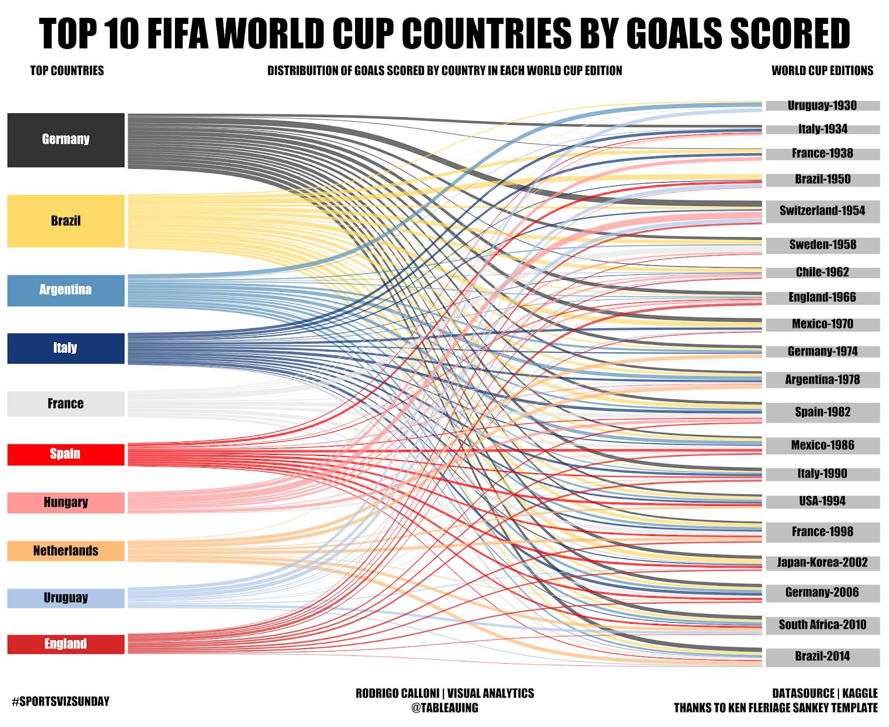

hw-03: Interactive Webpage and Marks & Channels



Marks
- Areas
- Coloring the states by hypothetical action to see a different situation that could have happened
Channels
- Color
- The difference in color shows the different supporters so that it is obvious for the viewers to see which side occupies more votes
Colormaps
- Categorical
- Blue shows Democrats and red shows Republicans
Marks
- Points
- Each point shows different trials
Channels
- Horizontal and vertical
- Launch angle on the vertical scale and exit velocity on the horizontal scale
- Color
- Different scoring value depending on color
Colormaps
- Sequential
- More purple means below the average and more orange means above the average and higher score
Marks
- Area (width)
- The width of the line indicates the score of a team
Channels
- Volume
- The thickness of a line shows the amount of scores of a team
- Color
- Each color represents each team
Colormaps
- Categorical
- Each color represents each team
Acknowledgement